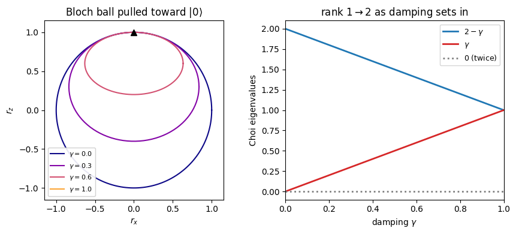

A quantum channel can be specified by listing its action on every input state, but that is an unwieldy object to test or compare. A tidier description packs the whole channel into one matrix. Prepare a maximally entangled pair, send one half through the channel while the other half waits untouched, and the joint state that comes out, the Choi matrix, encodes everything the channel can do. The Choi-Jamiolkowski isomorphism makes the dictionary between channel and matrix exact, and it trades a hard requirement for an easy one. Complete positivity, the demand that the channel stay physical even when applied to part of a larger entangled system, becomes the single statement that the Choi matrix has no negative eigenvalues.
The channel studied here is amplitude damping, which models an excited qubit leaking energy to its environment and settling toward its ground state. This is the \(T_1\) relaxation familiar from nuclear magnetic resonance and from superconducting qubits, where an excitation decays over time. Because every state is drawn toward \(|0\rangle\), the channel is non-unital and does not leave the maximally mixed state in place, unlike isotropic noise that has no preferred direction. A single parameter, the probability that the excitation is lost, sets how strong the damping is.
Reading the channel off its Choi matrix turns an abstract condition into a concrete calculation. Once the matrix is built, checking that it describes a valid channel is a matter of inspecting a four-by-four spectrum, and the rank of that matrix reports how many Kraus operators the channel genuinely needs, which in turn signals whether the channel is reversible or has begun to lose information.
This exercise builds the Choi matrix from the Kraus operators, finds its spectrum \(\{2-\gamma,\gamma,0,0\}\) and confirms that it stays non-negative for every damping strength, and reads the limiting cases of no damping and full reset off the rank of the matrix.
Mathematical background
The Choi-Jamiolkowski isomorphism turns a channel into a state on a doubled space. Acting with the channel on one half of the unnormalized maximally entangled vector \(|\Omega\rangle = \sum_i |i\rangle|i\rangle\) produces the Choi matrix
The map \(\mathcal{E}\) is completely positive if and only if \(J(\mathcal{E})\) is positive semidefinite, and trace preserving if and only if \(\mathrm{Tr}_1 J(\mathcal{E}) = \mathbb{I}\), so channel properties become spectral properties of a matrix. The amplitude-damping channel models relaxation from \(|1\rangle\) to \(|0\rangle\) with probability \(\gamma\) through the Kraus operators
and its Choi matrix has eigenvalues that expose how the channel both preserves and damps the basis states. Reading channel properties off \(J(\mathcal{E})\) is the device that lets the rest of the tutorial treat noisy evolutions and states on the same footing.
The Choi matrix lives on \(\mathbb{C}^2 \otimes \mathbb{C}^2\) and is constructed by applying the channel to one half of a maximally entangled state. Equivalently, we compute \(\mathcal{E}(|j\rangle\langle k|)\) for all basis elements and assemble:
For \(\gamma \in [0,1]\): both \(2-\gamma \geq 1 > 0\) and \(\gamma \geq 0\), so \(J \geq 0\). This confirms complete positivity via the Choi theorem.
Part (c): Limiting cases
\(\gamma = 0\) (identity channel): Eigenvalues \(\{2, 0, 0, 0\}\), rank 1. The Choi matrix is \(J = 2|\Omega\rangle\langle\Omega|\) where \(|\Omega\rangle = (|00\rangle + |11\rangle)/\sqrt{2}\) is the maximally entangled state. A rank-1 Choi matrix is the hallmark of a unitary channel.
\(\gamma = 1\) (reset channel): Eigenvalues \(\{1, 1, 0, 0\}\), rank 2. The channel completely erases the input: \(\mathcal{E}(\rho) = |0\rangle\langle 0|\) for all \(\rho\). The two nonzero eigenvalues reflect the two Kraus operators needed.
The transition from rank 1 to rank 2 as \(\gamma\) increases from 0 reflects the onset of genuine decoherence, the channel can no longer be undone by a unitary.
# --- Visualization: amplitude damping pulls the Bloch ball toward |0> ---import numpy as npimport matplotlib.pyplot as pltfig, ax = plt.subplots(1, 2, figsize=(9, 4))# (a) x-z slice of the Bloch ball under amplitude damping:# r_x -> sqrt(1-g) r_x, r_z -> (1-g) r_z + g (non-unital: shifts up to |0>)phi = np.linspace(0, 2* np.pi, 200)cx, cz = np.cos(phi), np.sin(phi)for g, c inzip([0.0, 0.3, 0.6, 1.0], plt.cm.plasma(np.linspace(0.0, 0.8, 4))): ax[0].plot(np.sqrt(1- g) * cx, (1- g) * cz + g, color=c, label=rf"$\gamma={g:.1f}$")ax[0].plot(0, 1, "k^", ms=7) # |0>: the fixed point of the dampingax[0].set_aspect("equal"); ax[0].set_xlim(-1.15, 1.15); ax[0].set_ylim(-1.15, 1.15)ax[0].set_xlabel(r"$r_x$"); ax[0].set_ylabel(r"$r_z$")ax[0].set_title(r"Bloch ball pulled toward $|0\rangle$")ax[0].legend(fontsize=8, loc="lower left", framealpha=0.9)# (b) Choi spectrum {2 - g, g, 0, 0}: rank rises 1 -> 2g = np.linspace(0, 1, 100)ax[1].plot(g, 2- g, color="C0", lw=2, label=r"$2-\gamma$")ax[1].plot(g, g, color="C3", lw=2, label=r"$\gamma$")ax[1].plot(g, 0* g, color="grey", lw=2, ls=":", label=r"$0$ (twice)")ax[1].set_xlabel(r"damping $\gamma$"); ax[1].set_ylabel("Choi eigenvalues")ax[1].set_title(r"rank $1\to2$ as damping sets in")ax[1].set_xlim(0, 1); ax[1].legend(fontsize=9)plt.tight_layout()plt.show()

Takeaway
The Choi matrix of the amplitude-damping channel has spectrum \(\{2-\gamma,\, \gamma,\, 0,\, 0\}\), which stays non-negative for all \(\gamma \in [0,1]\), so the channel is completely positive. Its rank rises from one at \(\gamma = 0\) to two once damping sets in, marking the onset of irreversible decoherence.
References
Choi, Completely positive linear maps on complex matrices, Linear Algebra and its Applications (1975).
Jamiołkowski, Linear transformations which preserve trace and positive semidefiniteness of operators, Reports on Mathematical Physics (1972).
Nielsen and Chuang, Quantum Computation and Quantum Information, Cambridge University Press (2010).
Płodzień, Information Scrambling, Quantum Chaos, and Haar-Random States, lecture notes (2025). arXiv:2511.14397